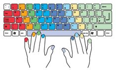

Pros y Contras de la Programación Competitiva
Pros
- Mejora la capacidad de resolución de problemas.

- Desarrolla el pensamiento crítico y analítico.
- Fomenta habilidades en algoritmos y estructuras de datos.
- Aumenta la capacidad de concentración y enfoque.
- Mejora las habilidades de programación y conocimiento de lenguajes.
- Promueve la competencia sana.
- Facilita el trabajo en equipo y la colaboración.
- Abre oportunidades profesionales.
- Desarrolla la capacidad para trabajar bajo presión.
- Mejora la capacidad de aprendizaje y adaptación.

Contras
- Puede generar estrés debido a la presión competitiva.
- Enfoque excesivo en algoritmos específicos puede limitar la creatividad.